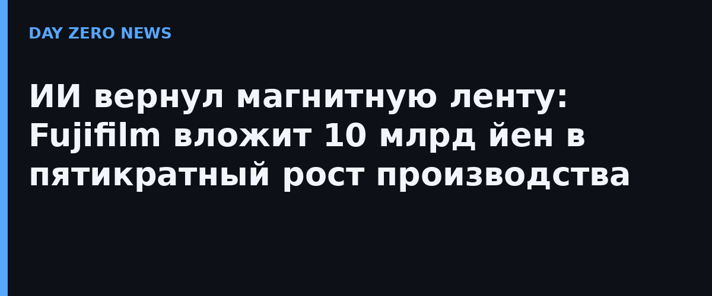

Fujifilm поднимет производственные мощности по магнитным лентам в пять раз к финансовому году 2028 года, пишет Nikkei со ссылкой на источники. Инвестиции — около 10 млрд йен, это крупнейшее расширение с начала 2000-х. Удар сделан на современные картриджи LTO: до 100 Тбайт в сжатом виде (40 Тбайт нативно) на одну кассету.
Причина прозаична: ленточные накопители в простое не потребляют электричество, а стоимость архивного хранения на ленте заметно ниже, чем на жёстких дисках — те, в свою очередь, дороже SSD. На фоне дефицита памяти и взлетевших цен на накопители этот ценовой разрыв только вырос. Дата-центры, финансовые институты и научные организации и так хранят резервные копии на ленте; теперь к ним добавляются petabyte-архивы обучающих данных.
У ленты есть и security-бонус: физически отключённый (air-gapped) архив недоступен для шифровальщиков и удалённых атак — актуально, когда ransomware-атаки на бэкапы стали нормой. Поэтому ленту покупают не только архиваристы, но и службы ИБ.
Пока Fujifilm наращивает проверенное производство, конкурентов ленте ищут в лабораториях: Microsoft развивает Project Silica (запись в стекле), Cerabyte жжёт данные лазером по керамике, SPhotonix использует объёмные воксели в кварце, Piql и DigiFilm — киноплёнку, а ДНК-хранение собирает вокруг себя сразу несколько стартапов. Но ни одна из технологий пока не даёт ленты по цене за терабайт — так что ИИ-инфраструктура в обозримом будущем будет расти вместе с производством плёнки.
Отдельного официального анонса Fujifilm нет: источник — собственное расследование Nikkei, компания цифр не подтверждала.